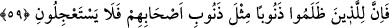

şeye etki yapabilen, “el-Metin” Teâlâ’nın kulu da hiçbir şeyden etkilenmeyen kişi
anlamındadır.
Ebu’l-Abbas ez-Zerûki şöyle demiştir: el-Kâviyy sıfatı Allah’ın zât, sıfat ve
ef’âlinde zâfiyet bulunmadığını, O’na hastalık ve yorgunluğun ârız olmadığını, nâkıs ve
güçsüz olmaması hasebiyle de kendisine kusur ve aczin ulaşmadığını ifâde eden bir
sıfattır.
Meşâyıhtan biri şöyle demiştir: “Kâvi” kelimesi kuvvetten türemiş olup bâtınî olan
“havl (kuvvet)” ile zâhirî olan “kudret”in ortası bir kelimedir. Çünkü amel yapma
düşünce gücü önce insanın içinde oluşmaktadır. Buna “havl” denir. İkinci olarak içteki
bu güç uzuvlara yansır, buna da “kuvvet” denir. “Kudret” ile “kuvvet” arasındaki ayrıma
gelince, kuvvet bir şeyi güç kullanmak sûretiyle kavramak, kudret ise bunu yapabilme
takati ve gücüdür. Bu yüzden Allah’ın gücünü belirtme ifâdesi olarak her ikisi de
kullanılmış ve “Lâ havle ve lâ kuvvete illâ billâh” denilmiştir. Bu temsil, konuyu
anlamanız için getirilmiştir. Yoksa Allah Teâlâ bütün mahlûkların sıfatlarından
münezzehtir. Kim Allah’ın güçlü olduğuna inanırsa her şeyde bulunan güç ve kudretin
O’na âid olduğunu bilip yardımı O’ndan bekler.
el-Kaviyy ismiyle Allah’a yakınlık kesbeden kuldan beklenen; tedbiri bırakması,
miktarlarla mücâdeleden vazgeçmesi, zan ve iddiâlara kapılmaması, ihsânın sadece
Allah tarafından olabileceğini anlaması, mahlûkat korkusu ve dünyevî kaygılardan uzak
durmaya önem vermesidir. Ahlak itibariyle de kuldan beklenen; Allah tarafından
güçlendirildiğini bilmesi, bu nedenle hiçbir kınayıcının kınamasından korkmaması ve
yapacağı işlerde hiçbir durumda zayıf olmayacağı kanâat ve alışkanlığını kazanmasıdır.
“el-Kaviyy” isminin husûsiyeti, varlık âleminde bir gücün zuhûr etmesidir. Bu ism-i
celili okuyan zayıf himmet sâhibi ve zayıf cüsseli insan güce kuvvete kavuşur. Şâyet bir
mazlûm zâlimin yok edilmesi için bin defa bunu tekrarlarsa, bu iş meydana gelir ve bu
ism-i celil o zâlimin işini bitirir.
“el-Metîn” ism-i celîline gelince, metîn, “kemâl-i kuvvete sâhib” anlamında Allah’ın
yüce isimlerinden biridir. Öyle ki hiç kimse O’nunla muâraza ve müşâreket edemez.
Kimse O’nunla boy ölçüşemez. Kuvvetinde bir zayıflık ve yapacağı işte de bir mânia
bulunamaz. Bilâkis O, hiç kimsenin kendisinin karşısına çıkamayan, kendisini
yenemeyen ve kuvvetinde başka bir maddeye ve sebebe muhtaç olmayandır. Kim O’nun
kuvvetinin azâmetini ve sağlamlığını bilirse, hiçbir şeyden korkmaz. O’nun himmetini
terkedip kendi himmetiyle bir şeye dayanıp güvenmez. “el-Metîn” ismi, kuvvetin
zuhûrunu ifâde eder. Bu yüzden Allah Teâlâ onu “el-Kâviyy” ismiyle beraber
getirmiştir. Allah’ın bu ismi eğer günahkâr bir genç için on defa okunursa o genç
tevbekâr olur.